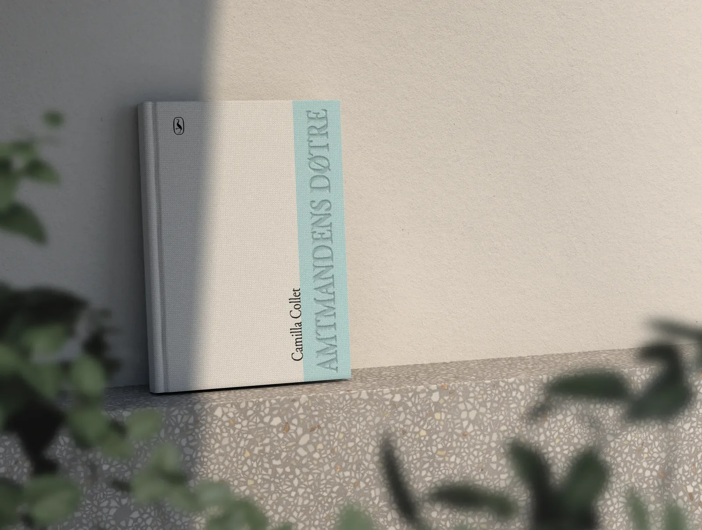
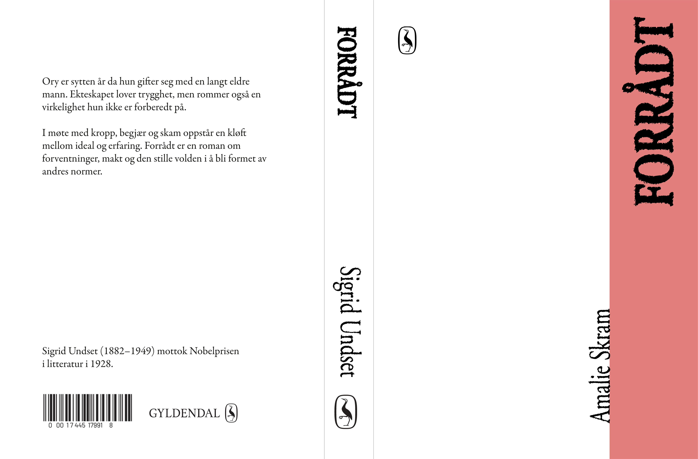
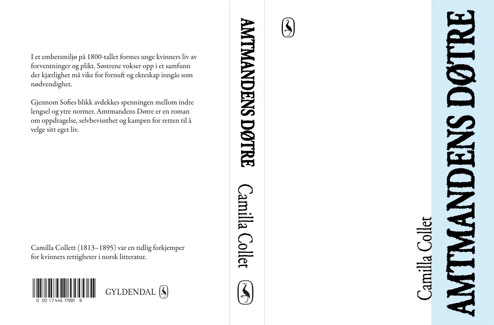
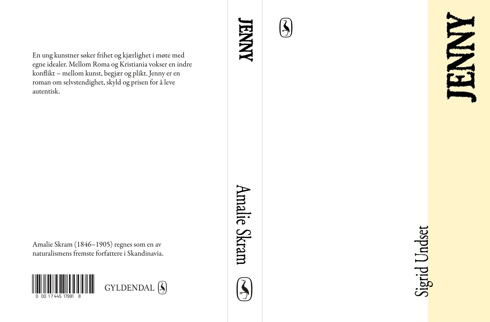
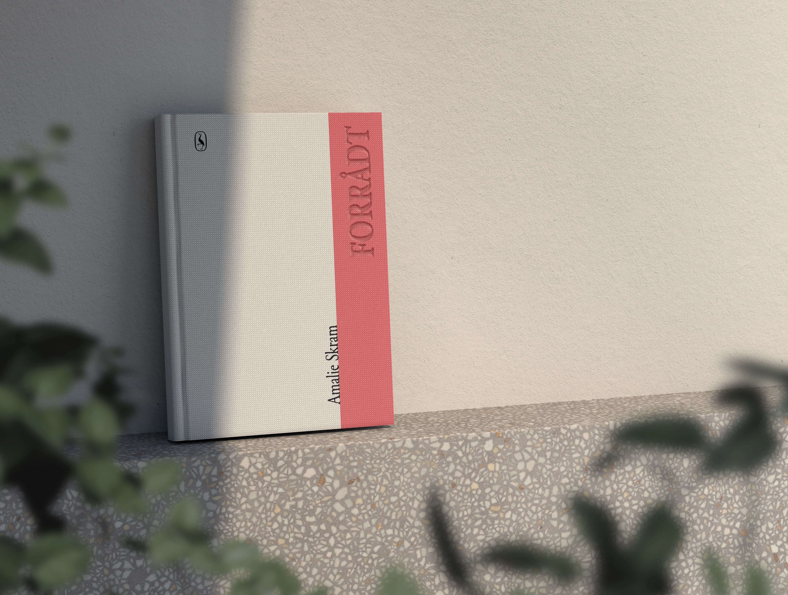
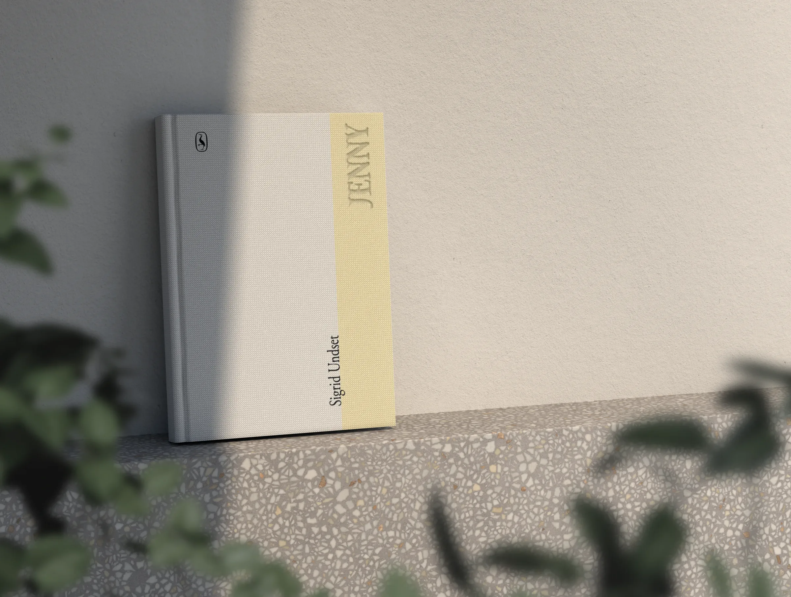
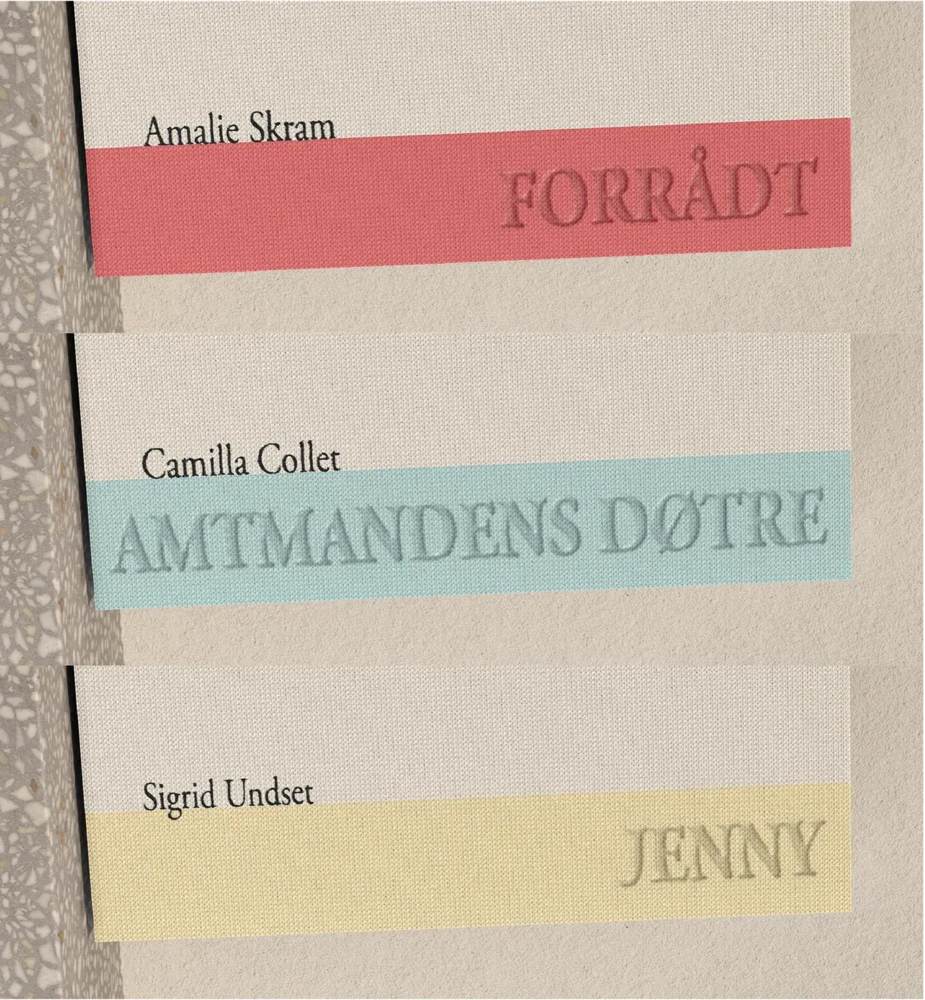
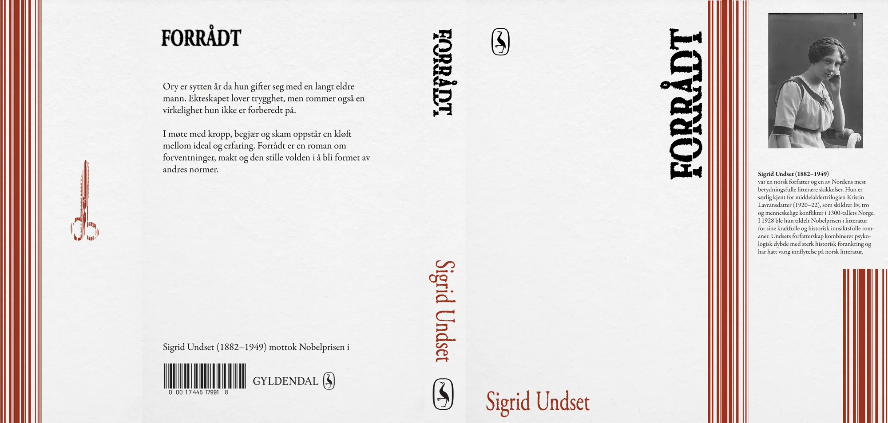

BOKOMSLAG
I dette prosjektet har jeg laget en ny visuell identitet for tre norske klassikere: Amtmandens Døtre, Forrådt og Jenny. Jeg ønsket å gi bøkene et mer dempet, fysisk og tidløst uttrykk, der tekstilbind, preging og fargevalg spiller en større rolle enn illustrasjon og tradisjonelle salgselementer.





Preging og trykk
Omslaget kombinerer to produksjonsteknikker: preging og trykk. Tittelen er preget (deboss), der motivet presses ned i materialet med en metallform, noe som gir en taktil og innfelt effekt. Den svarte teksten og fargefeltet er trykket direkte på tekstilet og ligger som pigment oppå overflaten, slik at stoffets struktur fortsatt er synlig gjennom fargen.
Deboss-effekten gjør at tittelen trer frem i møte med lys, og fungerer som en subtil visuell parallell til det underliggende i fortellingene. I både Forrådt, Amtmandens Døtre og Jenny tematiseres spenningen mellom ytre rammer og indre erfaringer — følelser, begjær og konflikter som ikke alltid er synlige på overflaten.
Den rene baksiden understreker bokas objektkarakter og gjør serien mer eksklusiv. Praktisk informasjon er flyttet til en egen side bakerst i boka, slik at omslaget kan fungere mer som et taktilt og visuelt objekt enn som en kommersiell flate.

Baskerville & Garamond
Tittel og forfatter: Jeg valgte Baskerville som utgangspunkt fordi den har et klassisk og litterært preg som passer godt til norske romaner. For at typografien skulle fungere bedre på tekstilbind, bearbeidet jeg bokstavene manuelt i Photoshop. Jeg gjorde strekene visuelt kraftigere, forenklet noen av de tynneste detaljene og justerte uttrykket slik at tittelen skulle bli tydeligere ved preging. Dette var viktig fordi små detaljer og tynne linjer lett kan forsvinne når typografien overføres til tekstil. Resultatet er en typografi som fortsatt har et klassisk uttrykk, men som oppleves mer fysisk, robust og taktil. Skriften blir dermed en del av materialiteten i omslaget, ikke bare en tekstlig informasjon.
Brødtekst: Brødteksten er satt i Garamond Premier Pro. Fonten komplementerer Baskerville-overskriftene uten å konkurrere om oppmerksomheten, noe som skaper en harmonisk balanse mellom det dekorative og det funksjonelle. Siden brødteksten ikke skal preges inn i tekstilbindet, trenger den ikke samme robuste strektykkelse som tittelen. Jeg har likevel lagt på en svak tekstureffekt, slik at bokstavene får noe røffere kanter og et mer materialnært uttrykk.
Original (Baskerville Old Face)
Bearbeidet for tekstil og preging

Amtmandens Døtre →Et horisontalt fargefelt
Et horisontalt fargefelt fungerer som seriens visuelle anker, og gir hver utgivelse en distinkt identitet i en ellers koherent serie.
Fargene er definert i RGB for skjermvisning, men er også konvertert til CMYK for trykk. Opasiteten skaper en gjennomsiktig effekt på skjerm — i trykk simuleres dette ved hjelp av rasterisering eller overprinting mot tekstilunderlaget.
NB: Logomerket er basert på Gyldendals danske merke. Dette var ikke et bevisst valg i starten, da jeg først senere ble klar over at merket tilhørte det danske Gyldendal. Jeg valgte likevel å beholde det fordi oppgaven åpnet for fri bruk av forlagsmerke, og fordi det minimalistiske og klassiske uttrykket passet godt til bokseriens formspråk. I prosjektet brukes merket derfor som en visuell referanse, ikke som en faktisk forlagsidentitet.